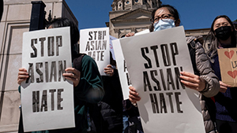

Racism is ugly. It divides people into “us” and “them”, based on where we come from or the colour of our skin. And it happens when people feel that it’s okay to treat others badly as they go about their daily lives.
Racism is the belief that there are human groups with particular (usually physical) characteristics that make them superior or inferior to others. Racist behaviour can be not just overt, such as treating some people according to their race or colour, but also covert, when society systematically treats groups according to some form of discriminating judgement.
Discrimination is the unfair or prejudicial treatment of people and groups based on characteristics such as race, gender, age or sexual orientation. That’s the simple answer. But explaining why it happens is more complicated. The human brain naturally puts things in categories to make sense of the world. Very young children quickly learn the difference between boys and girls, for instance. But the values we place on different categories are learned – from our parents, our peers and the observations we make about how the world works. Often, discrimination stems from fear and misunderstanding.